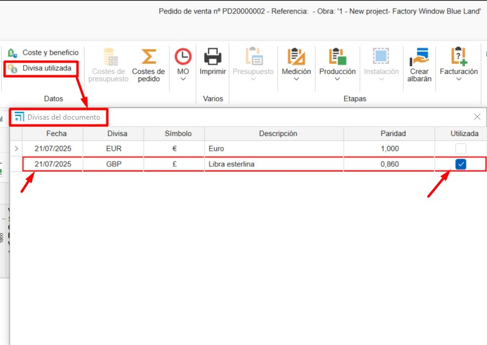

Divisas
1. Introducción
Este manual explica paso a paso cómo utilizar divisas en ENBLAU y cómo reflejarlas correctamente en los informes, respetando la paridad de cada moneda.
2. Definición de divisas
Desde el apartado Divisa, puedes definir la paridad entre monedas.
Por ejemplo:
- Divisa de aplicación: EUR
- Paridad definida: 1 € = 0.86 £ (GBP)
Esto permite trabajar con múltiples monedas en los documentos de ventas.


3. Aplicación en los informes
Para utilizar una divisa en documentos de venta (como un pedido):
- Selecciona la divisa deseada (ej. GBP – Libra esterlina).
- Opcionalmente, elige también el idioma del documento.
- Imprime el informe.
El sistema aplicará automáticamente la conversión de valores según la paridad definida en ese momento.


4. Divisa utilizada
La opción Divisa utilizada permite conservar un histórico de las paridades aplicadas en cada documento.
Esto resulta útil para:
- Mantener la paridad original sin necesidad de modificarla manualmente.
- Asegurar coherencia en documentos históricos, incluso si la tasa de cambio ha cambiado posteriormente.
¿Cómo usarla?
- Abre un documento de venta (ej. un pedido).
- Ve al apartado: Datos → Divisa utilizada.
- Se abrirá la ventana Divisas del documento.
- Marca la casilla en la columna Utilizada para aplicar la paridad correspondiente a la fecha seleccionada.

ℹ️ Nota: Esta funcionalidad es especialmente útil para documentos con fechas antiguas o para operaciones que requieren conservar la tasa de cambio original.
 Español
Español
 English
English
 Italiano
Italiano
 Português
Português